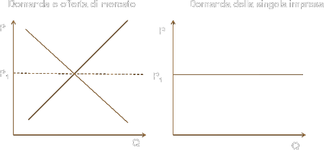

Concorrenza Perfetta
Tra le forme di mercato, vi è la concorrenza perfetta, definita come quella situazione in cui l’impresa è tanto piccola, rispetto alle dimensioni del mercato, da non influenzare, con i suoi acquisti di mezzi di produzione e con le sue vendite di prodotto, i prezzi dei mezzi di produzione e del bene prodotto. Il modello della concorrenza perfetta si basa su quattro ipotesi fondamentali:
numero molto elevato di imprese e acquirenti; nessuna azione di un singolo (in termini di scelta della quantità prodotte) ha effetto sul prezzo di mercato;
le imprese sono "price taker";
il prodotto è omogeneo;
non vi sono barriere all'entrata e all'uscita;
L’obiettivo delle imprese è la massimizzazione del profitto.
L'impresa è detta price-taker, a differenza dal sistema economico, caratterizzato dalla concorrenza monopolistica, ove le imprese sono price setter. Ciò significa che l'impresa fronteggia una curva di domanda orizzontale (se alzasse il prezzo del proprio prodotto non avrebbe compratori). Questo problema, come si è detto, riguarda la quantità da produrre; l’impresa sceglie questa quantità in modo da massimizzare i propri profitti, cioè la differenza fra ricavi e costi. Perciò dobbiamo considerare il modo in cui i ricavi da un lato, e i costi dall’altro lato, variano al variare della quantità prodotta. Per evitare confusioni, occorre distinguere tra i vari tipi di ricavi e di costi.
La curva di domanda che l'impresa deve fronteggiare è una retta orizzontale, tracciata in corrispondenza del livello del prezzo di mercato: qualsiasi variazione della quantità offerta non può modificare il prezzo di mercato.
Poiché il prezzo è fisso, il ricavo totale è proporzionale alla quantità prodotta e venduta (se Q raddoppia il ricavo totale raddoppia)
R = Q ∙ P.
Il ricavo medio (dato dal ricavo totale diviso per la quantità venduta) sarà uguale al prezzo:
P⋅Q/Q = P
Inoltre, in concorrenza perfetta, anche il ricavo marginale è uguale al prezzo, in quanto al variare della quantità immessa da ciascun singolo venditore sul mercato il prezzo di vendita non cambia.
I costi totali (C) indicano il costo complessivo che l’impresa deve sostenere per ottenere una quantità Q di prodotto. All’interno dei costi totali si usa distinguere due componenti: il costo fisso totale (F), e il costo variabile totale (V). I costi fissi indicano le spese che l’impresa deve sopportare prima di poter iniziare la produzione: le spese per l’acquisto di macchinari e impianti, e le spese generali di gestione. I costi variabili indicano le spese per i salari ai lavoratori impiegati nel processo produttivo, e per l’acquisto del capitale circolante necessario al processo produttivo stesso (materie prime, energia, semilavorati). Il costo medio (c) è pari al costo totale diviso per la quantità prodotta (c = C/Q). Analogamente, il costo fisso unitario (f) è pari al costo fisso totale diviso per la quantità prodotta (f = F/Q); e il costo variabile unitario (v) è pari al costo variabile totale diviso per la quantità prodotta (v = V/Q). Perciò:
C = F + V = fQ + vQ = cQ
c = C/Q = (F + V)/Q = f + v
Infine, il costo marginale (m) indica di quanto aumenta il costo totale, quando aumenta di una unità la quantità prodotta. In generale il costo marginale sarà diverso dal costo medio unitario. (I due coincidono quando il costo medio unitario è costante.)
La teoria marginalista suppone che sia il costo medio unitario, sia il costo marginale, abbiano un andamento ad U al variare della quantità prodotta. Cioè, man mano che aumenta la quantità prodotta dall’impresa, il costo medio e il costo marginale prima diminuiscono, poi aumentano. Le curve dei costi debbono necessariamente avere quest’andamento, per permettere la determinazione dell’equilibrio di un’impresa in concorrenza perfetta.
Le curve dei costi hanno un andamento a U quando si verificano due condizioni. In un primo momento, quando l’impresa produce una quantità relativamente piccola, debbono prevalere i rendimenti crescenti di scala: all’aumentare della produzione i costi unitari devono diminuire. A partire da un certo livello di produzione, poi, debbono prevalere i rendimenti decrescenti di scala: cioè all’aumentare della produzione i costi unitari devono aumentare.
Il prevalere dei rendimenti crescenti di scala all’inizio, e dei rendimenti decrescenti di scala a partire da un certo livello di produzione, è spiegato dai teorici marginalisti nel modo che segue: all’inizio prevalgono i vantaggi derivanti da una migliore organizzazione del lavoro; in seguito diventano dominanti le «diseconomie di scala» dovute a problemi organizzativi (burocratizzazione dell’impresa) e soprattutto al fatto che alcuni fattori di produzione diventano scarsi.